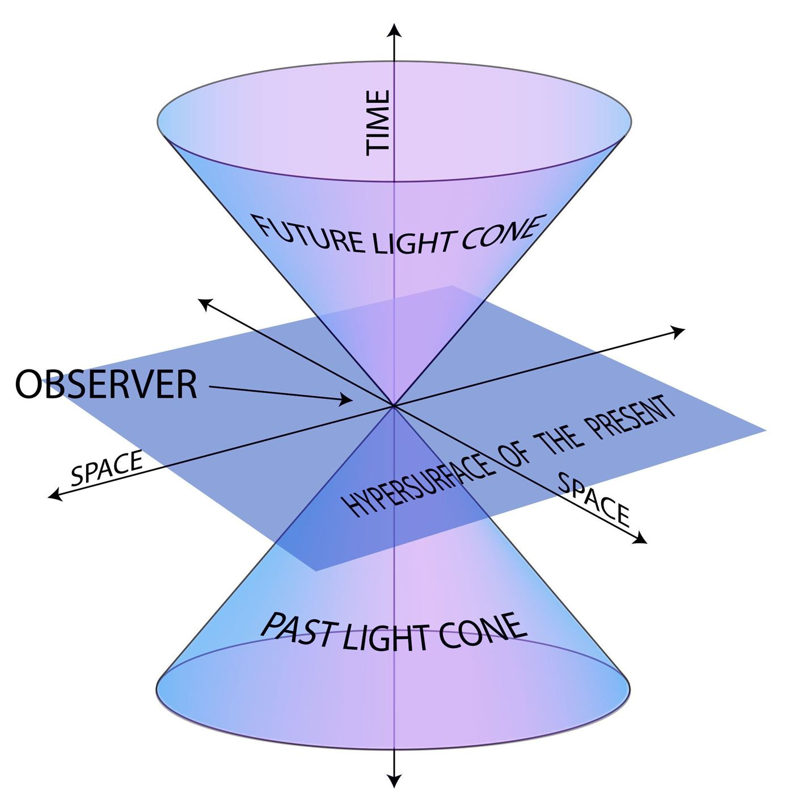
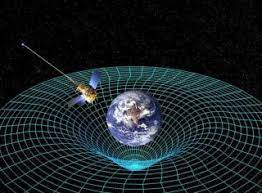

The theory of relativity usually encompasses two interrelated physics theories by Albert Einstein; special relativity and general relativity, proposed and published in 1905 and 1915, respectively. Special relativity applies to all physical phenomena in the absence of gravity. General relativity explains the law of gravitation and its relation to the forces of nature.
According to Einstein's special theory of relativity, time is not an absolute quantity, but depends on the speed of the observer. The closer you get to the speed of light, the more time contracts and passes less quickly. This phenomenon is called "time dilation". This means that two events which are simultaneous in one frame of reference may not be so in another frame which moves with respect to the first. The simultaneity of events is therefore not an absolute concept, but a relative one. Why does this happen? Because the speed of light is constant for all observers and does not depend on their motion. This implies that space and time must vary to maintain this constancy.
General relativity is a theory of gravitation formulated by Einstein in 1915. It describes gravity not as a force acting at a distance between massive bodies, but as an effect of the geometry of space-time. Spacetime is the structure that unites space and time into one entity. Before explaining here are some premises: no body with mass m>0 can go faster than light, and the speed of light is 300,000 km/S. Everything is above the space-time fabric and according to its mass it curves it instead the light simply passes through it and this implies that it also falls into the gravitational field of a body and then rises again but there is something very very "scary" as far as matter is concerned, a body that has such a high mass that it "pierces" the space-time fabric, the light enters from it but can no longer go back up and if the light cannot go back up, the light that does not go out does not allow the visualization of this body, to see it you have to perceive its gravitational effects, its name is: Black Hole; On a theoretical level, for those who approach or enter it, a few seconds are thousands of years on Earth for them, but on a practical level, so much gravity would make us spaghetti until we are reduced to atoms.
